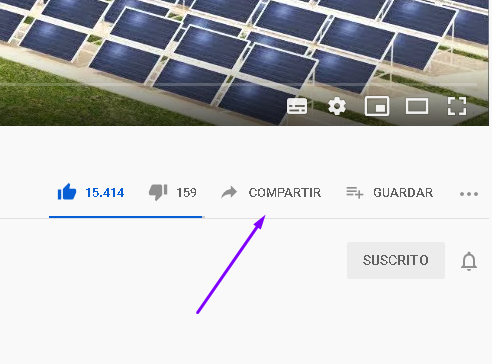
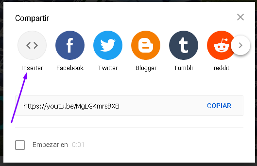
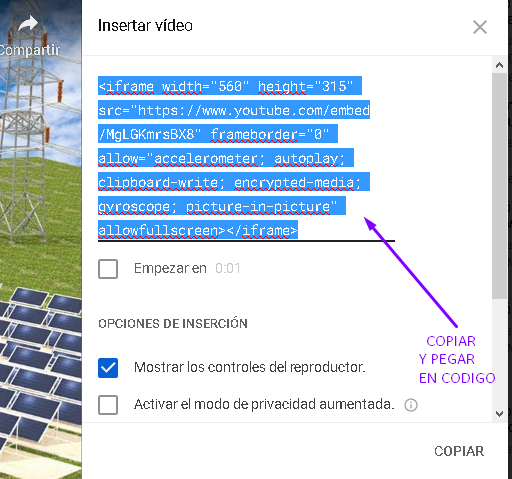

Con la etiqueta video se pueden insertar videos colocando su inicialización y finalización.
Con el atributo src=" " se coloca dentro de las comillas la ruta del video que se quiera colocar.
Con el atributo width=" " se coloca el ancho del video y automáticamente se adapta el largo.
Con el atributo controls se activa el formato video para poder reproducirlo, éste atributo es booleano y no necesita parámetros, es decir únicamente se coloca el atributo a secas.
Con el atributo poster=" " se coloca entre las comillas la ruta de la imagen que se quiere mostrar a primera vista en el video.
Con el atributo autoplay se reproduce el video automáticamente, los navegadores bloquean la reproducción automática por malas prácticas en marketing, sin embargo después del primer video los siguientes se reproducirán automáticamente, este atributo al igual que "controls es booleano y no tiene parámetros.
Con el atributo muted los videos que se reproduzcan automáticamente se reproducirán sin sonido.
Audios
Con la etiqueta audio se pueden insertar audios colocando su inicialización y finalización.
Se le pueden incluir todos los atributos de la etiqueta "video" excepto el atributo "poster".
Recomendaciones
Es recomendable que los audios y videos vengan de fuentes externas especializadas en audio y video ya que esas fuentes codifican sus videos para que pesen poco y se vean bien, si no se sabe codificar bien un video solo se conseguirá saturar la página.
Si se inserta un video a la página de una fuente interna se tiene que verificar que sea en formato mp4 y codec h264, se puede usar otro formato mp y otro codec (codificación y decodificación) de videos pero requiere más conocimientos en este campo.
IFRAME
La etiqueta iframe se utiliza para insertar contenidos de otras fuentes externas como Instagram (fotos), YouTube (videos), Spotify (música), Wufoo o Jotform (formularios). Descripción más detallada del IFrame


